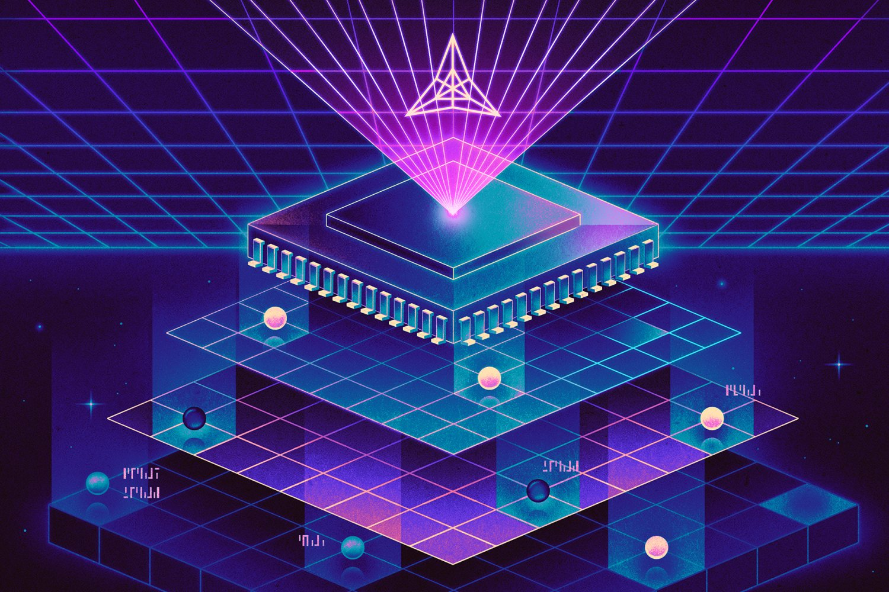
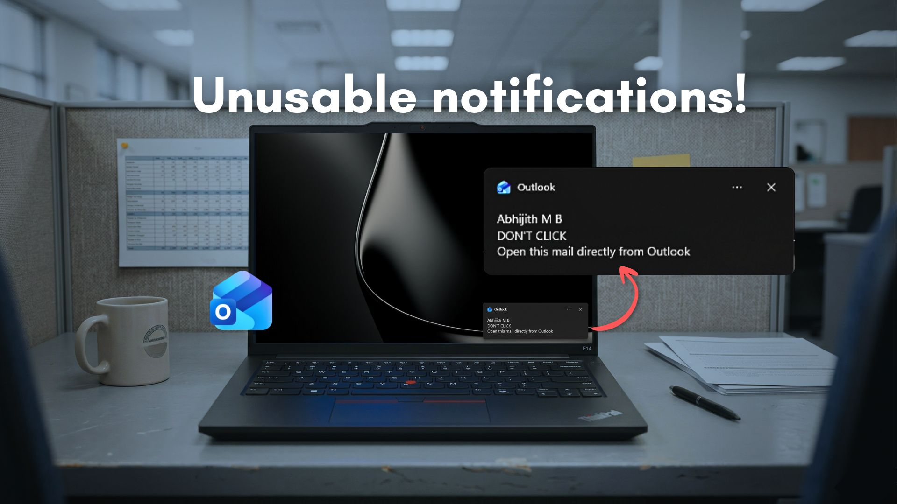
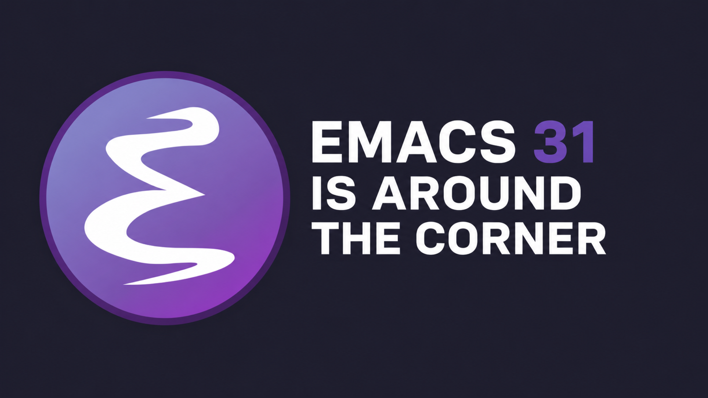
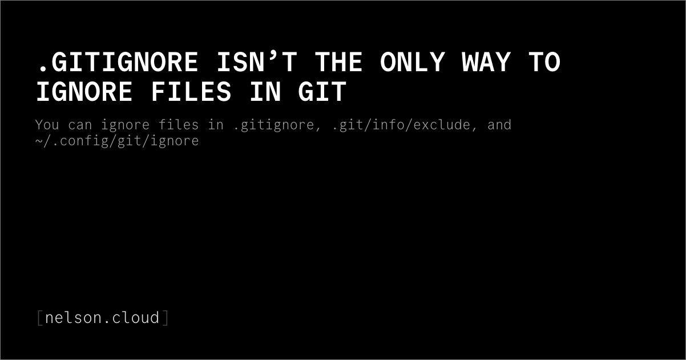
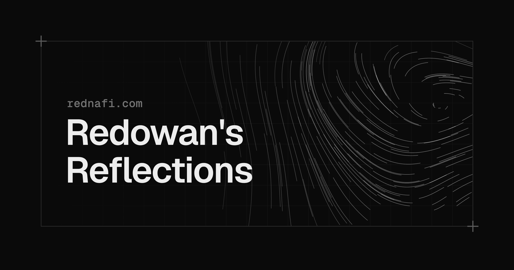
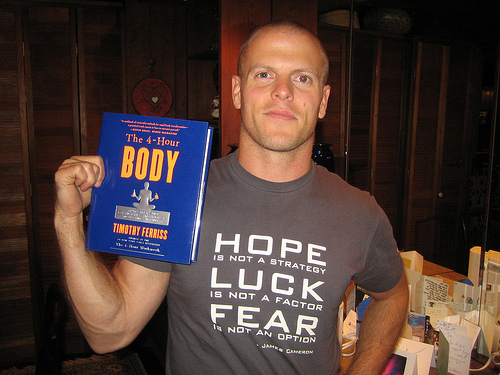
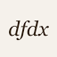
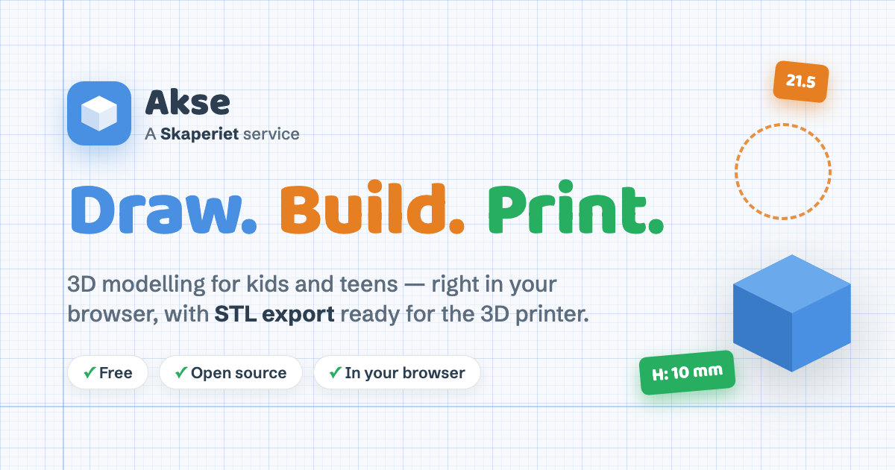
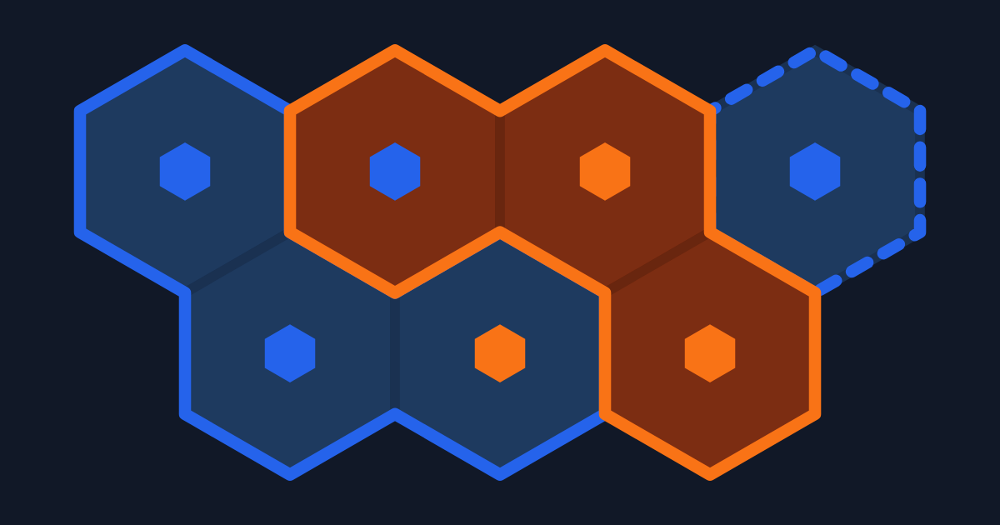

40 Midjourney ▲ 1304
Midjourney ▲ 1304
Midjourney ▲ 1304Midjourney Medical
Full text unavailable (page blocked / paywalled). Follow the link to read at the source.
Read full story ↗ Midjourney ▲ 1304Full text unavailable (page blocked / paywalled). Follow the link to read at the source.
Read full story ↗The iconic Harry Potter Philosopher's Stone scene of Hogwarts acceptance letters bursting in through every opening of a small English suburban house, hundreds of envelopes flying out of the fireplace, streaming through the letterbox in the wooden front door, and pouring through the chimney, envelopes swirling chaotically through the living room mid-air, motion blur on the flying letters, warm interior daylight, wide…
Read full story ↗CS 6120 is a PhD-level Cornell CS course by Adrian Sampson on programming language implementation. It covers universal compilers topics like intermediate representations, data flow, and “classic” optimizations as well as more research-flavored topics such as parallelization, just-in-time compilation, and garbage collection. The work consists of reading papers and open-source hacking tasks, which use LLVM and an…
Read full story ↗
Enterprise storage has traditionally required costly licensing, proprietary hardware, and complex management. ENAS changes that by delivering a private, local storage platform designed for performance, scalability, and simplicity, all without the overhead typically associated with enterprise infrastructure. The all-new ENAS combines powerful hardware with modern storage technologies to provide the performance and…
Read full story ↗In the past few months I have unwittingly become an expert on all things W Social : the microblogging platform that is a fork of Bluesky and bills itself as Europe’s alternative to X, with identity verification “to fight bots and misinformation” and data hosted in Europe “to promote European digital sovereignty”. Why am I fascinated by this topic? I find the discrepancies between their public image and the reality…
Read full story ↗
Per-user auth is high friction Authorize once, inherit everywhere The Enterprise-Managed Authorization extension is now stable. Organizations can centrally manage authorization for MCP servers and end-users can access all connected MCP servers through a single log in. The extension is being adopted by Anthropic, Microsoft, Okta and a growing number of MCP servers. The Enterprise-Managed Authorization (EMA) extension…
Read full story ↗
A new kernel, or core program within an operating system, gives researchers a cleaner view of what’s happening inside a processor. Called Fractal and developed at MIT, the kernel has already surfaced previously unknown behavior in Apple’s M1. When security researchers want to understand what a modern processor is really doing with the kind of detail that determines whether attacks like Spectre and Meltdown are…
Read full story ↗
DuckDB has gone from a research project at CWI Amsterdam in 2019 to one of the most widely adopted databases of the past decade. The list of places it shows up is long: notebooks, ETL pipelines, dashboards, CI test runners, embedded analytics inside SaaS products, even an iPhone running TPC-H at scale factor 100 . Companies have started building real products around it. MotherDuck is wrapping DuckDB into a cloud…
Read full story ↗Full text unavailable (page blocked / paywalled). Follow the link to read at the source.
Read full story ↗Updated a few seconds ago acme-v02.api.letsencrypt.org (Production), portal.letsencrypt.org (Production) High Assurance Datacenter 1, High Assurance Datacenter 2 acme-v02.api.letsencrypt.org (Production) acme-staging-v02.api.letsencrypt.org (Staging) portal.letsencrypt.org (Production) portal-staging.letsencrypt.org (Staging) *.c.lencr.org (Production) stg-*.c.lencr.org (Staging) log.twig.ct.letsencrypt.org…
Read full story ↗Architecture Payments Resiliency The American Express core payments ecosystem is a global platform relied on by Card Members and partners around the world. Every day, it processes live payment transactions that require high availability, low latency, and predictable performance. Resiliency is not an afterthought; it has been encoded into the system’s design from the beginning. Localized…
Read full story ↗It's been two years since my last Zork adventure and I finally got time to finish it. But before I restored my last save, I checked my blog notes and there was one "opened issue" which I wanted to address. I glossed over problematic trivia about Zork which says, that "zork" was a jargon word for unfinished program in MIT Dynamic Modeling Group back in 70's. I also pointed out, that …
Read full story ↗What better place to showcase aviation history in the making than at the world's largest military aviation museum! | 0:30 DARPA Challenges incentivize researchers from across academia, government, commercial, and defense communities to develop non-traditional or unexpected solutions to grand national security challenges, through cash prizes. Prizes encourage thinking outside the box and broad participation by…
Read full story ↗This is the story of how I found 10,000 repositories on GitHub that distribute Trojan malware. They are all from different contributors, have different names, and are not forks of other repositories. But they share a common pattern, which is what allowed me to write a script to find such repositories. I have a project on GitHub, and I wanted to check whether search engines had indexed it. I typed the project name into Google, and my repository appeared in the results. I entered the same query into Bing, and someone else’s repository appeared in the results, with the exact same name and description. It was a copy of my repository…
Read full story ↗Swisscom blue News & E-Mail Until June 19, the Federal Palace in Bern will once again be bustling with activity. Numerous important issues will be on the agenda during the summer session of the National Council and Council of States. From June 1 to 19, 2026, the Federal Parliament’s summer session will take place at the Federal Palace. Topics up for debate include the 13th AHV pension, the armed forces, and federal…
Read full story ↗
Microsoft’s Outlook for Windows has a notification problem that is hard to ignore. Clicking a Windows 11 notification for a new email is supposed to take you straight to that message. Instead, the new Outlook makes you wait, and the numbers are embarrassing. Windows 11 ships with two versions of Outlook. There is Outlook Classic , the long-running Win32 desktop app built for power users, and there is the new Outlook…
Read full story ↗
Karthik Chikmagalur recently published another of his excellent "Even More Batteries Included with Emacs" posts, digging into lesser-known features that already ship with Emacs today. I wanted to write its mirror image. His post covers the batteries already in the box. Mine covers the ones arriving in Emacs 31. Emacs 31 isn't out yet, but I've been building it from both emacs-31 branch and master and daily driving…
Read full story ↗A hand-picked directory of website submission sites. Find the best places to submit your website, startup, or product, earn quality backlinks, and rank higher across search engines and AI answers. High-authority publishing platform. Links are nofollow, but reach and reposting potential are large. The canonical company profile. Investors, journalists, and aggregators pull from it, so a complete profile pays off well…
Read full story ↗
I’ve been using Git for so long and I just realized you can ignore files at three different levels and not just with .gitignore . The three files you can use to ignore files are: .gitignore is the usual file where you write files you want to ignore. It’s checked into Git along with the rest of the code. Whatever files you add to it will not get taken into account when running git commands. The exclude file lives in…
Read full story ↗Full text unavailable (page blocked / paywalled). Follow the link to read at the source.
Read full story ↗Full text unavailable (page blocked / paywalled). Follow the link to read at the source.
Read full story ↗Universities and hospitals are repurposing existing drugs through late-stage trials with funded costs up to 90% lower than those taking place in the pharmaceutical industry. This “hidden” research system, which operates outside of the patent system, has huge potential to regularly provide society with affordable treatments. Examples of this have included using a cancer drug to treat a leading cause of blindness,…
Read full story ↗After dev kit success, Modos’s cofounders offer an e-paper monitor Matthew S. Smith is a contributing editor for IEEE Spectrum and the former lead reviews editor at Digital Trends. Modos is crowdfunding to build an integrated e-paper monitor. Last fall, Modos debuted the Paper Monitor and Dev Kit , an open-source e-paper display kit that hit a record 75-hertz refresh rate. The project was successful, raising almost…
Read full story ↗Most of us accept rats as a fact of life. They live in tunnels and sewers, gnaw through walls, contaminate food, and resist nearly every attempt to push them back. A 2023 estimate put New York City’s rat population at about three million animals, roughly one rat for every three human residents. Almost nowhere do authorities try to get rid of rats altogether. The goal is usually to reduce sightings of them, limit the…
Read full story ↗I have been using ( badly ) Emacs since around 2008. In this short article, I will try to present the chaotic path that led me to choose Emacs as my main text and code editor. This is absolutely not a tutorial , but rather a small piece of my personal lore, because it is quite amusing to describe clumsy choices that, in hindsight, turned out to be, in my view, beneficial. This article is largely inspired , while…
Read full story ↗
I’ve been managing my dotfiles with GNU stow for a few years. I even wrote a piece with a corny title about that setup back in 2023. Stow served me well, but managing symlinks across multiple devices slowly became a pain in the butt. So I started looking around for a better tool and even considered writing my own. Then a colleague pointed me to chezmoi , and so far I’m liking it a lot. It does everything I need, and…
Read full story ↗
TesterArmy continuously monitors the key journeys across your website and mobile app and alerts your team when something breaks. Takes less than 2 minutes. No credit card required. Make sure your product works, whether it's an app or a website. Explore the key features that drive our partners growth, day after day. Paste your staging or production URL to set up a project and test your mobile apps, web apps, and…
Read full story ↗ WIRED Column▲ 112
WIRED Column▲ 112Full text unavailable (page blocked / paywalled). Follow the link to read at the source.
Read full story ↗RTK's pitch sounds like an absolute developer cheat code: "Cut token usage, keep the same intelligence, pay 1/10 the price." With 60k GitHub stars and counting, the industry is clearly buying into the hype. But in the current dev tools gold rush, if something sounds too good to be true, it almost always is. While compressing terminal output for LLM agents sounds like a no-brainer, a closer look under the hood…
Read full story ↗
On my first trip to Japan, I brought along a JR Rail Pass to take advantage of the subsidized rail transport for tourists. After riding the JR Yamanote Line and the Tōkaidō Shinkansen, I assumed JR must be a single national train system. But I soon learned it’s far from that. The Yamanote Line is run by the East Japan Railway Company — JR East — and the Tōkaidō Shinkansen by JR Central. And each of these JR…
Read full story ↗A LITTLE TIME away can be clarifying. When you’ve had a break from a place, you’re able to see it with fresh eyes. You notice things that routine and familiarity had rendered invisible. During my last trip home to the U.S., one of the things that jumped out at me was the number of people with AirPods in their ears. Where I live, in southwest Germany, AirPods are far less common. It was jarring to see so many little…
Read full story ↗
“I must not fear. Fear is the mind-killer. Fear is the little-death that brings total obliteration. I will face my fear. I will permit it to pass over me and through me. And when it has gone past I will turn the inner eye to see its path. Where the fear has gone there will be nothing. Only I will remain.” — Bene Gesserit “Litany Against Fear” from Frank Herbert’s Dune “I must not fear. Fear is the mind-killer. Fear…
Read full story ↗

dfdx Labs Column▲ 75Robotics research has become cheap and accessible enough that small teams, and even individuals, can now do meaningful research on real hardware. There are two reasons for this. First, capable robot hardware has become dramatically more affordable: the physical setup below uses an industrial-grade arm, two cameras, and a full teleoperation setup while staying below €5,000. 1 1 This figure excludes VAT and the cost…
Read full story ↗
Another week, another Gribouille release. Gribouille 0.3.0 is narrower in scope than 0.2 , but it brings some wanted controls. The headline is guide control: a single argument now hides axis ticks and legends without touching the theme. Alongside that, compose() gains a theme: parameter, defer() replaces plot(..., defer: true) , geom-area() stacks by default, and annotate() can let marks overflow the panel.…
Read full story ↗Full text unavailable (page blocked / paywalled). Follow the link to read at the source.
Read full story ↗
Today we launched a new plugin for Datasette, datasette-apps , with this launch announcement post on the Datasette project blog. That post has the what , but I’m going to expand on that a little bit here to provide the why . Datasette Apps are self-contained HTML+JavaScript applications that run in a tightly constrained <iframe> sandbox hosted on your Datasette application. They can use JavaScript to run read-only…
Read full story ↗
On June 15, Oracle engineer Lois Foltan confirmed what a good chunk of the industry had stopped believing: JEP 401: Value Classes and Objects will be integrated into the main OpenJDK repository and is targeting JDK 28. Thanks for reading JVM Weekly! Subscribe for free to receive new posts and support my work. The change is so large that the remaining committers were asked to hold off on bigger commits during the…
Read full story ↗ Agentic Resource Discovery Column▲ 68
Agentic Resource Discovery Column▲ 68AI clients are no longer limited to what the model knows. They can use external capabilities — tools, Skills, MCP servers, APIs, workflows, and other agents. We call these capabilities agentic resources . The number of agentic resources is already growing quickly. Some are public, some come from vendors, some are built inside companies; some are narrow tools for a single task, and others are agents or workflows that…
Read full story ↗ Lambda Combine Column▲ 49
Lambda Combine Column▲ 49Click on a planet to see JPL Horizons details | NASA Deep Space Network logs update in the background (all antenas) Demo for Datastar + Common Lisp / by fsm ΛↃ lambda combine Click on a planet to see details...
Read full story ↗
recent entries all entries feed Hi, I’m Mark Nottingham. I write about the Web, protocol design, HTTP, Internet governance, and more. This is a personal blog, it does not represent anyone else. Find out more . Comments? Let's talk on Mastodon. @mnot@techpolicy.social The Nature of Internet Standards (series) No One Should Have That Much Power Monday, 29 April 2024 RFC 9518 - What Can Internet Standards Do About…
Read full story ↗
So you want to do AI research? It’s true that no one really teaches you how. Not directly, anyway. But it turns out that the way to get started is pretty simple: some combination of (i) reading and (ii) building stuff. You can’t do one without the other. You become a researcher through the combination. It turns out the process of becoming a great researcher is not unlike learning to meditate: The way to get started…
Read full story ↗Full text unavailable (page blocked / paywalled). Follow the link to read at the source.
Read full story ↗Security research firm Paradigm Shift today published details of a new BootROM vulnerability affecting Apple's A12 and A13 chips, along with a working proof-of-concept exploit named "usbliter8." The BootROM, or SecureROM, is the first code an iPhone runs when it powers on. Because it is baked directly into the chip at manufacture, any vulnerability found there cannot be fixed with a software update, meaning affected…
Read full story ↗
 Skaperiet Column▲ 15
Skaperiet Column▲ 15A 3D tool for the maker space Akse is a 3D modelling tool made for kids and teens. Combine primitive shapes, draw your own 2D blueprints — and export the model as an STL file, ready for the 3D printer. ✓ STL export for 3D printing Akse means axis — as in X, Y and Z. That's the whole idea: a tool where kids and teens learn to think in three dimensions, without drowning in…
Read full story ↗On 1 May 2026, a legal entity for The Raku Foundation was registered in the Netherlands. A Stichting with registration number 42050836. Community feedback shaped the formation; the aim throughout has been a member-driven organisation with annual elections and the -Ofun paradigm at its heart. It is going to take a little time for the Executive Board to put in place the registration of Raku community members and…
Read full story ↗ Buy vs Rent (Bangalore) Column▲ 6
Buy vs Rent (Bangalore) Column▲ 6Full text unavailable (page blocked / paywalled). Follow the link to read at the source.
Read full story ↗Full text unavailable (page blocked / paywalled). Follow the link to read at the source.
Read full story ↗
You are in charge of drawing the district lines for the elections. Click adjacent tiles on the map to group them into a district. Each district must be one connected shape, no islands allowed. Coloured houses show where voters live. Not every tile on the board has one, some are just empty land. A party wins a district by having more houses in it than any other party. If two parties tie in a district, nobody wins it.…
Read full story ↗
 GitHub Show HN▲ 51
GitHub Show HN▲ 51Talos is a WebAssembly interpreter written in Lean 4, named after the bronze giant of Greek mythology who guarded Crete — a mechanical guardian, built to enforce rules. The same definitions that execute a Wasm program are the ones you reason about . There is no separate spec interpreter to keep in sync: evaluation and proof share a single codebase. Work in progress. Talos is under active development. APIs and proof…
Read full story ↗